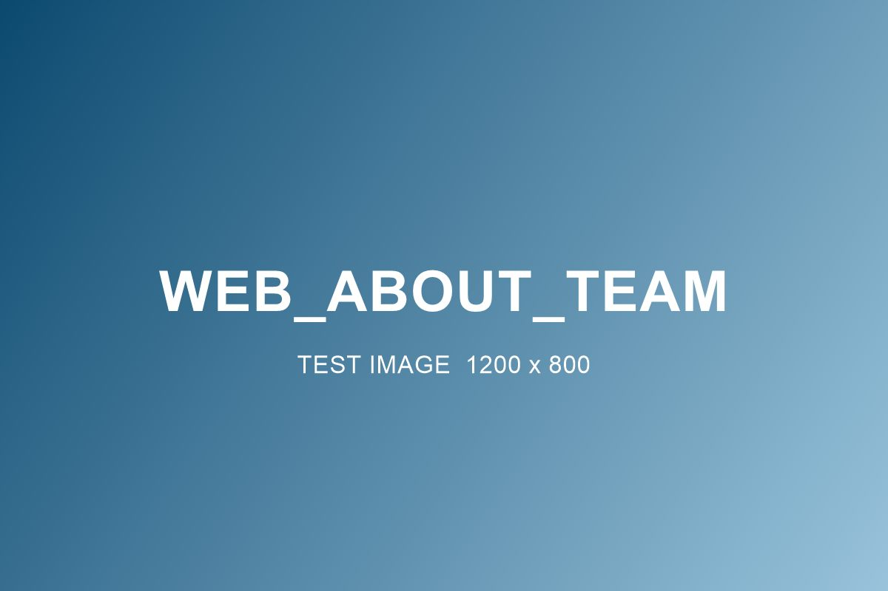

A supply company that acts like a care company
Prism Medical Products is a home medical supply company headquartered in Elkin, North Carolina, serving patients and facilities nationwide as a Henry Schein company.
Supplies are never just supplies
Every box we ship is part of someone's treatment plan. A dressing that arrives late delays healing. A sensor that lapses breaks a data record a clinician depends on. A garment worn past its life stops working quietly. We built Prism around that reality: coverage verified first, shipments on schedule and a phone number where a person answers.
- A Henry Schein company, backed by one of healthcare's largest distribution networks.
- Joint Commission Accredited, held to the same standards as the facilities we serve.
- Elkin, NC roots, headquartered at 112 Church St, Suite 101, Elkin, NC 28621.

The CARE values
Coverage confirmed. Adherence supported. Responsiveness guaranteed. Escalation when it counts. It's our framework for every patient relationship, and the standard we ask our partners to hold us to. See how it works in practice →
Growing the way our patients need us to
We started in wound care, compression and CGM. Ostomy and urology are our newest lines, built on the same verified-coverage, scheduled-resupply system. As patient needs grow, so does the catalog: one supplier relationship that expands instead of multiplying.
Work with us.
Patients, providers and payers all start in the same place: a conversation.
Contact Prism